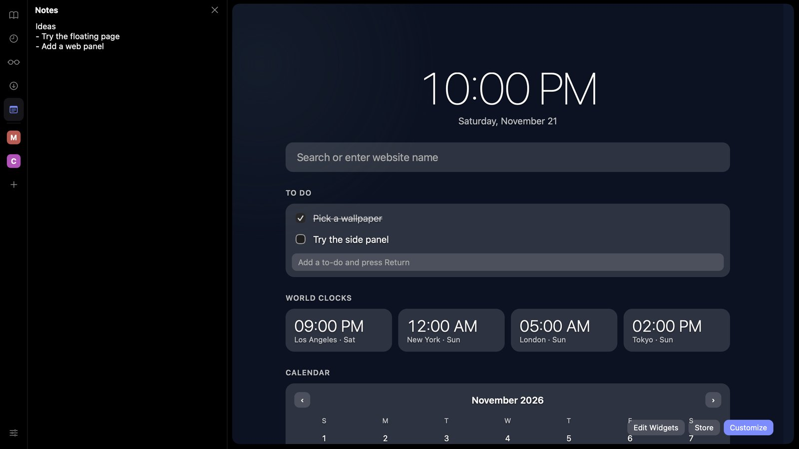
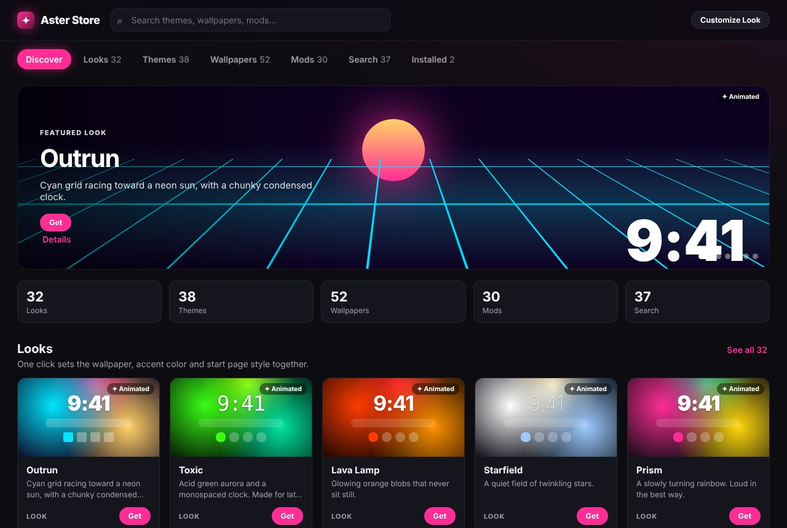
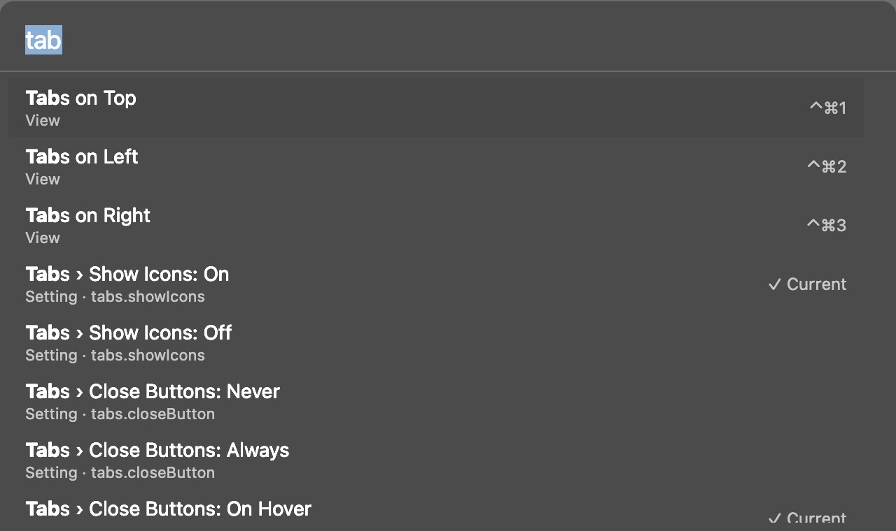

The Mac browser
you shape yourself.
Aster is a fast, native browser built on WebKit. Themes, wallpapers, your start page, tabs, toolbar and shortcuts are all yours to change, and every change applies the moment you make it.
Free. No account. Blocks trackers by default.
Make it yours, instantly
Nearly everything in Aster can be changed, and nothing needs a restart. Most changes show up in under a tenth of a second.
Themes and Theme Studio
Pick a theme, or design your own with live preview: every color, tab shape, corner and font. Share it as a file anyone can import.
A start page that's yours
Your own photo, 4K video, WebM or animated GIF as the wallpaper, even Wallpaper Engine video folders. Add a clock, to-do list, calendar, world clocks and notes.
Tabs your way
Tabs on top, on the bottom or down either side. Collapse them to icons or hide them until you reach the edge. Split view, workspaces, hover previews.
Side panel
Bookmarks, history, a reading list, downloads, notes, or any website kept open beside the page you're reading.
Private by default
Ads and trackers are blocked, sites load securely, and private windows forget everything when you close them.
Command palette
Press ⌘K to search every command, open tab and setting at once. Type “tabs left” or “theme midnight” and it just happens.
Your shortcuts
Rebind any shortcut, give a command two, or use key sequences. Safari and Chrome presets, plus optional Vim-style keys.
Your layout
Rearrange the toolbar, switch to compact mode, or float the page with rounded corners. Every option is in one simple Settings window.
Never lose a tab
Reopen closed tabs and windows right where they were. Your whole session comes back after a restart, even your scroll position.
Even more ways to make it yours
New in 1.2. Every one of these is in Customize Look, the Settings window and the command palette.
- Workspaces Separate tab sets, each with a name, emoji and theme
- Split view Two tabs side by side
- Hidden side tabs Tabs slide out when you reach the window edge
- Tabs on the bottom Or top, left or right
- Mouse gestures Draw to go back, close or reload, and reassign any stroke
- Boosts Your own CSS and JavaScript for any site, and CSS for the start page
- Command chains Many actions on one shortcut, like a “Focus mode”
- Day and night themes Switch theme automatically by time of day
- Accent from wallpaper Colors that follow your wallpaper
- UI sounds Soft, glass, retro or mechanical sound packs
- Reader view Just the article, in your font, colors, size and width
- Tab previews Rest on a tab to see its page
- Tab limiter Keep only the tabs you choose in memory
- Zoom per site Plus a default zoom for every page
- Mute tabs And mute every other tab at once
- Page screenshots Saved to Downloads and copied in one step
- Link previews See where a link goes before you click
- Your launch Last session, the start page or your own list of pages
- Rename tabs Give any tab your own name, with an emoji as its icon
- One font everywhere Pick a font for every website, plus a smallest text size
- Scroll bar styles Thin, hidden, or thin in your accent color
The Aster Store
Over 700 free add-ons, built right in. One click to try, one click to remove. No account, and it works offline.
Screenshots
A look at Aster.



Changelog
What's new in each version.
-
Version 1.2
- 574 themes in the Store: every major pro sports team, soccer clubs, national teams, racing, many more games, 36 code-editor color schemes, nature, season, retro and OLED moods, plus new collections for holidays around the world, cities, space, food and drink, music, oceans, weather, cars, pastels, and easy-to-see high-contrast and colorblind-friendly themes. Fan themes are unofficial, with no logos.
- Workspaces, split view, tabs on the bottom and side tabs that hide completely.
- Mouse gestures, Boosts (your own CSS and JavaScript per site) and command chains.
- Day and night themes, accent color from your wallpaper, and UI sound packs.
- Reader view, tab hover previews, a tab limiter, link previews, zoom per site, muting tabs and page screenshots.
- Rename any tab, with an emoji as its icon. Names are kept between launches.
- One font for every website, a smallest text size, scroll bar styles and your own CSS for the start page.
- Choose what opens when Aster starts.
- A new automatic bug sweep tests every command, 96 layouts, every theme and 400 random settings changes, plus stress and leak tests and 300 deliberately broken settings files. 223 unit tests, 129 in-app checks and 7 speed benchmarks pass.
- Fixed: an error message from a refused setting stayed on screen after a good change.
-
Version 1.1
- Wallpapers play sharp at full resolution, 4K included.
- WebM videos and animated GIF, WebP and APNG pictures work as wallpapers.
- Wallpaper Engine video folders can be used as wallpapers.
- Side tabs collapse to a slim column of icons and slide open on hover (⌥⌘S).
- Clear messages when a wallpaper file can't be played, saying why.
-
Version 1.0
- The Aster Store: 299 themes, wallpapers, Looks, site mods and search engines.
- Theme Studio for designing and sharing your own themes.
- Side panel with bookmarks, history, reading list, notes and web panels.
- Compact mode, floating page and many new tab options.
- New start page widgets: to-do list, calendar, world clocks and quote of the day.
-
Preview 0.7: Start page and Library
- Customizable start page with photo, video and animated wallpapers.
- Downloads, bookmarks with import and export, and a Library window.
- A Settings window with every option and search.
-
Preview 0.6: Speed
- Unused tabs sleep to free memory and wake instantly.
- New tabs open in under 20 ms, plus a Task Manager.
-
Preview 0.5: Privacy
- Ad and tracker blocking with a per-site shield.
- HTTPS-Only mode, private windows and clearing site data on quit.
-
Preview 0.4: Address bar
- Smart completion and suggestions from your history, tabs and bookmarks.
- Search keywords, like “yt cats” for YouTube.
-
Preview 0.3: Customization
- Five built-in themes, plus your own theme files that apply as you save them.
- Command palette (⌘K) over commands, tabs and settings.
- Shortcut editor, key sequences and optional Vim-style keys.
- Toolbar editor and find in page.
-
Preview 0.2: Tabs
- Tabs on top or in a sidebar, pinned tabs and color tab groups.
- Drag tabs between windows or tear them off.
- Reopen closed tabs and full session restore.
-
Preview 0.1: Foundations
- Native WebKit browsing with a smart address bar.
- One settings file that applies changes live.
Opening Aster the first time
- Open the downloaded file and drag Aster to your Applications folder.
- The first time, Control-click Aster and choose Open, then Open again. macOS asks this once for apps from outside the App Store.
- That's it. Your settings live in
~/Library/Application Support/Aster.